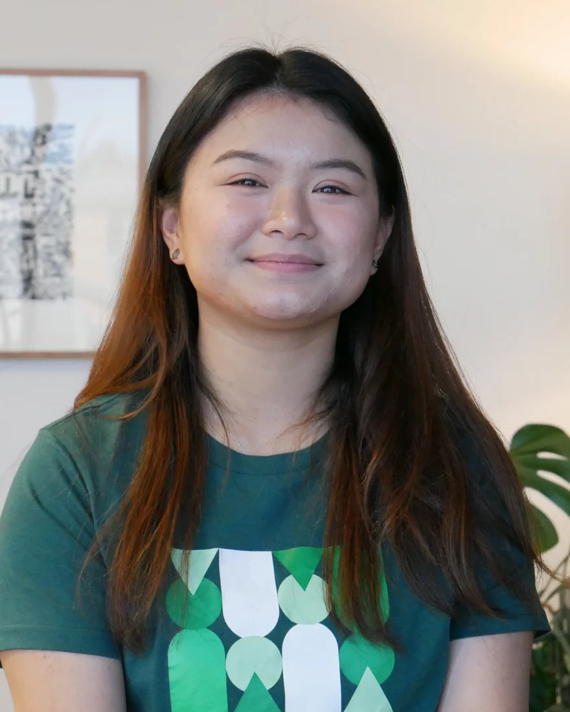

About me
A bit about me
I am a Bachelor of Data Science student at Deakin University in Melbourne, with five years of youth and community work behind me. I build data tools for people, not just for dashboards. I am looking for internships and graduate roles where the work touches education, health, or sustainability.
1,000+
young people engaged through workshops I facilitated
~150
children and teens mentored in STEM (maths and coding) and literacy
~30
events delivered for university students in Melbourne, across college and university clubs
Skills
Programming & Databases
Python
SQL
MongoDB
JavaScript
Java
C
C++
C#
HTML
ML & Data Science
pandas
scikit-learn
Random Forest
Feature engineering
Data wrangling
EDA
Statistical analysis
Time series
Text processing
Visualisation & BI
Tableau
Power BI
Excel
matplotlib
Streamlit
Data visualisation
Tools
Git
Jenkins
CI/CD
DevSecOps tooling
Wireshark
Cisco Packet Tracer
Lovable
Trello
Spoken languages
Khmer
English
Mandarin
Education
06/2024 – 07/2027 (expected)
Bachelor of Data Science
Deakin University, Burwood
06/2024 – 06/2026
Diploma of Information Technology
Deakin College
Certifications
Deakin SME Skills for Education, Employment and Digitals (SEED) AI Training · Deakin University · 02/2026
View credential →
Selected work
Featured projects

Where I've worked
Experience
Industry & Placements
09/2026 – Current
Coding Mentor (Work-Integrated Learning placement)
Digimaker
- Teach kids across Victoria to code, moving them from block-based Scratch to text-based programming and Raspberry Pi projects.
- Turn programming concepts into hands-on activities where students build, test and debug their own projects.
- Contribute to backend development on Digimaker’s learning management system (LMS) as part of my Work-Integrated Learning placement.
02/2024 – 04/2024
Programs & Communications Consultant
Impact Hub Phnom Penh
- Provided program, logistics, communications and technical support across five projects, including DakDam, Norea Island Participatory Planning and Youth4Climate.
- Managed participant and volunteer data, keeping records for over 1,000 participants and 30+ volunteers.
- Researched content for, and helped design the mechanics of, a climate challenge card game; ran digital campaigns and live story updates for events.
12/2023 – 01/2024
Concert PR Intern
Union of Youth Federations of Cambodia
- Wrote daily PR insight reports in the lead-up to the UYFC 45th Anniversary Concert.
- Worked with the media agency to produce promotional content, and coordinated with local authorities on LED installations across Phnom Penh and drone piloting.
03/2022 – 10/2022
Province Lead & Consultant, Siem Reap
Impact Hub Phnom Penh
- Co-managed and trained 22 volunteers to deliver 25 workshops reaching around 600 participants across Siem Reap.
- Partnered with 2 universities and 5 organisations to run workshops on Digital Branding and an Introduction to the SDGs.
- Co-hosted Climate Action Day to showcase youth-led environmental projects.
Employment
08/2026 – Current
Maths & English Tutor
Education Space
- Deliver one-on-one and small-group sessions for Year 1 to Year 9 students, tailored to each student’s curriculum and pace.
- Teach maths from arithmetic, fractions and percentages through to algebra and geometry, alongside reading comprehension, grammar and writing.
- Track each student’s progress and adapt lesson activities to their strengths and gaps.
02/2026 – 11/2026
Career Ambassador
DeakinTALENT, Deakin University
- Promoted DeakinTALENT programs, career events and workshops to students across campus, pointing them to the right resources.
- Supported outreach campaigns and events with the DeakinTALENT team to lift student participation.
- Named Ambassador of the Month (April 2026) and invited to a panel talk with Deakin’s country managers.
10/2024 – 10/2025
Student Learning Mentor → Senior Mentor
Deakin College
- Supported Diploma of IT students with coursework, study strategies and the move to university, and coordinated weekly engagement activities with the academic and events teams.
- Represented the College at the TEQSA Conference 2025, sharing student perspectives on data transparency, ethical AI and more accurate student data reporting.
- Started and led a cultural celebration event under the PeerLink program.
Leadership & Volunteering
07/2026 – 08/2026
STEM Mentor
In2Science
- Mentored Year 9 Maths students in weekly classroom sessions at Westall Secondary College.
- Modelled problem-solving and encouraged students to see themselves in STEM pathways.
10/2025 – 10/2026
Vice President
Deakin Cambodian Club
- Led club events, including a five-university Khmer New Year celebration with 855+ attendees.
- Managed the committee team, delegating roles and coordinating logistics across events.
08/2021 – 10/2022
Youth Workshop Facilitator
UNICEF Generation Future · UNDP · Movers Programme
- Facilitated 26 Movers Programme workshops for 842 participants across Cambodia.
- Visited rural schools with UNICEF Generation Future to help students find scholarship and exchange pathways.
- Facilitated sessions with indigenous communities for the UNDP Youth Focus Research Program.